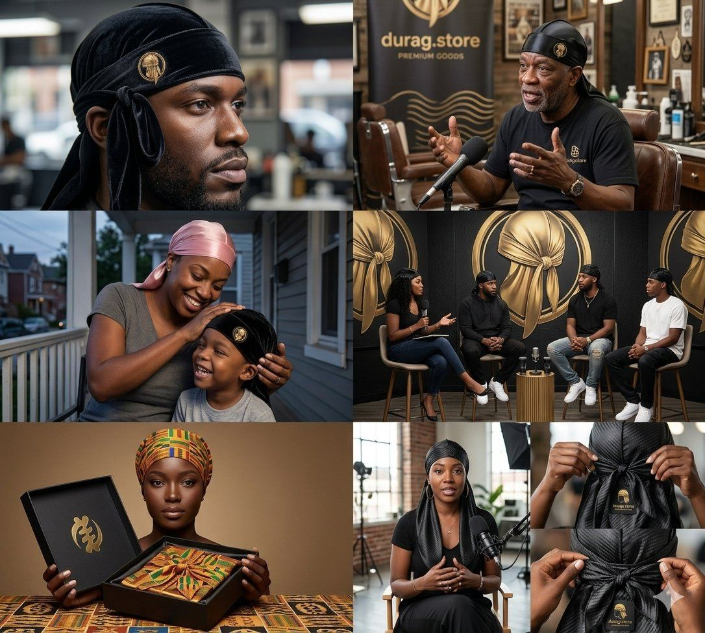

Dreadlock Caps: The Complete Guide to Sleeping and Living in Locs
Locs change the coverage equation: there is more hair, it is heavier, it holds its shape, and it resents being crushed. A dreadlock cap is built for that reality — oversized pocket, roomy drape, and (in the good ones) a satin interior that lets locs slide instead of snagging. DaeLocs (@daelocs) demonstrates the night-routine principles in the video below. This complete guide covers sizing, interiors, edge-safe band placement, and how to choose between a cap, a durag, and a bonnet when you wear locs.
Sizing: the pocket is the product
For locs, cap size means pocket volume, and the reference point in the category is the jumbo class — caps designed to swallow shoulder-length and longer locs without folding them. Judge a cap by loading it: your locs should settle inside with the cap's band reaching its seat without a fight. If you are wrestling the cap over the last few locs, it is a size too small, and the nightly wrestling will fuzz your roots and fatigue the cap.
Length direction matters too. Long locs rest most naturally swept back, so a cap with depth toward the back beats a shallow, evenly round one. When a brand offers a 'long' or 'jumbo' cut, that is the one speaking your language.
Interiors and bands: where quality lives
The interior should be satin or satin-lined. Locs catch on rough fabrics — cotton and coarse knits hook the fuzzy outer hairs of each loc and pull, creating the frizz halo loc wearers fight constantly. Satin lets the locs move as a mass without that micro-snagging, all night, every night.
The band should be wide and its placement deliberate: seated to grip the head without sawing across the front edges, which are the thinnest, most fragile locs you own. If a cap's band is thin elastic, wear a satin scarf under it as a buffer or choose a different cap. Edge loss is slow and quiet; by the time it is obvious, it has been happening for months.
Cap, durag, or bonnet for locs?
Night: the dreadlock cap is the specialist — room plus hold, made for exactly this. Day: a cap under a hat, or a durag-style wrap when you want the locs presented flatter and neater for a look. The bonnet competes at night for very long locs that want zero hold at all — pure preservation with full drape.
Many loc wearers land on cap-for-night, bonnet-for-backup, and keep both in satin. Whichever you choose, consistency is the multiplier: locs respond to nightly protection the way waves respond to compression — slowly, then all at once, in the form of locs that simply look healthier than everyone else's at the same age.
Watch: the starter-loc night routine from DaeLocs — cap principles in action
Video: “NIGHT TIME ROUTINE FOR STARTER LOCS | Two Strand Twist Starter Loc Journey” by DaeLocs (@daelocs) · Watch on YouTube
Shop the gear
Everything in this guide runs on the right gear: a durag that holds compression without slipping, a cap that stays put, and fabric that treats your hair right. The durag.store launch lineup is built to that standard — dual-layer construction, long tails, and stitching made to survive the routine. Join the launch list and use code GOLDSTANDARD for 15% off your first order.
Keep learning
- Double Durags for Long Locs: Containing Length Without Crushing It — Intermediate · Locs & Dreadlock Care
- Sleeping With Starter Locs: Protecting Baby Locs Through the Fragile Months — Basic · Locs & Dreadlock Care
- The Locs Night Routine: Moisture, Coverage and Morning Release — Basic · Locs & Dreadlock Care
Sources: Video — “NIGHT TIME ROUTINE FOR STARTER LOCS | Two Strand Twist Starter Loc Journey” by DaeLocs (@daelocs), youtube.com. Guide written by the durag.store Wave Lab.